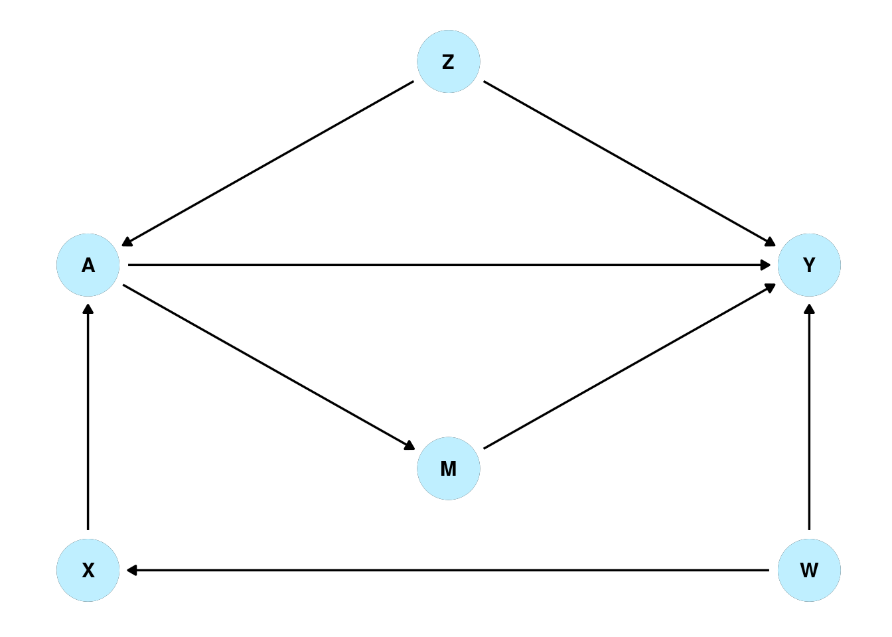

Doubly Robust estimation allows researchers to take advantage of both an outcome model and a model of treatment. If one or both of the models is correct, the doubly robust estimator will produce an accurate estimate of the causal effect. On the face of it the logic does not make sense. Consider a naive researcher who, not knowing anything about doubly robust estimators, creates two estimates of average causal effect. This is the causal diagram for our simulated data:

Boring Methods
The naive researcher uses uses thorough research and input from experts to come up with two models:
The outcome is affected by the treatment, Z, W, and M.
Y ~ A + Z + W + M
The treatment an individual is assigned to is affected by X.
A ~ X
Since we simulated the data we know that they have arrived at the correct model of the outcome, but an incorrect model of the treatment. Using these models the researcher performs linear regression and inverse probability weighting to arrive at two different estimates of average causal effect.
| Outcome Formula | Y ~ A + Z + W + M |
| Exposure Formula | A ~ X |
| Causal Effect Estimate from Outcome Model | 0.9998826 |
| Causal Effect Estimate from Treatment Model | 1.784511 |
The estimates are at odds and they can’t tell which of their models is failing. Both models have equivalently tiny p-values, both models are based on strong evidence from experts.
The First Part of The Doubly Robust Estimator
The researcher then figures out a way to make an ever worse estimator that will use both models.
\[ \frac{1}{n}\sum \frac{\hat{y}(\textrm{covariates}_i)*A_i}{\hat{e}(\textrm{covariates}_i)} - \frac{1}{n}\sum \frac{\hat{y}(\textrm{covariates}_i)*(1- A_i)}{1-\hat{e}(\textrm{covariates}_i)} \]
Where \(\hat{y}(\textrm{covariates}_i)\) are the predicted values of the outcome for each individual \(i\), \(A_i\) are the treatments received, and \(\hat{e}(\textrm{covariates}_i)\) are the probabilities the individual received the treatment \(A = 1\). By using both the outcome and treatment models, the researcher has ensured that this estimator will fail if either the model is wrong. Not only will it fail, but it will fail by the same amount as the individual estimators. This is very important.
Failing the Same
For simplicity let’s say IPW is
\[ \frac{1}{n}\sum \frac{Y_i A_i}{\hat{e}(\textrm{covariates}_i)} - \frac{1}{n}\sum \frac{Y_i (1-A_i)}{1-\hat{e}(\textrm{covariates}_i)} \]
Where \(Y_i\) are the actual outcome values. If the treatment model is correct this will produce a correct estimate of average causal effect.
Focus just on one side of the equation, and subtract the same side from the bad estimator above:
\[ \frac{1}{n}\sum \frac{Y_i A_i}{\hat{e}(\textrm{covariates}_i)} - \frac{\hat{y}(\textrm{covariates}_i)*A_i}{\hat{e}(\textrm{covariates}_i)} \]
Our researcher, sees that if they have a correct outcome model then \(Y_i A_i = \hat{y}(\textrm{covariates}_i)* A_i\) and so the whole thing would reduce zero.
| A | |
|---|---|
| Outcome Formula | Y ~ A + Z + W + M |
| Exposure Formula | A ~ X |
| Outcome Model Estimate | 0.999882632955987 |
| IPW Estimate | 1.7845109587187 |
| \(\frac{1}{n}\sum \frac{Y_i A_i}{\hat{e}(\textrm{covariates}_i)}\) | 2.80665032904263 |
| \(-\frac{1}{n}\sum \frac{\hat{y}(\textrm{covariates}_i)*A_i}{\hat{e}(\textrm{covariates}_i)}\) | 2.80719763152316 |
| Difference | -0.000547302480528045 |
Works Cited
(in progress)
https://doi.org/10.1093/aje/kwq439 https://www.degruyter.com/document/doi/10.1515/jci-2018-0016/html?lang=en
Code Appendix
Simulating Data
n <- 100000
Z <- rnorm(n, 0, 1) # Z
W <- rbinom(n, 1, .5) # W
X <- rnorm(n, Z, 2)
log_odds_A <- .5 * Z + .5 * X
odds_A <- exp(log_odds_A)
p_A <- odds_A / (1 + odds_A)
A <- rbinom(n, 1, p_A) # A
M <- rnorm(n, 20 - 2, .5)
Y <- rnorm(n, A + W + 2 * Z + 0.05 * M, .25)
data <- data.frame(A = (A), Y = Y, Z = Z, M = M, W = (W), X = X)Perform IPW and Outcome Regression
get_normal_methods <- function(data, outcome_formula, exposure_formula) {
outcome <- lm(outcome_formula)
ps_model <- glm(exposure_formula, family = "binomial")
data <- data %>%
mutate(ps = predict(ps_model, newdata = data, type = "response")) %>%
mutate(ipw = case_when(
A == 1 ~ 1/ps,
A == 0 ~ 1/(1-ps)
))
example_ipw <- lm(Y ~ A, data = data, weights = ipw)
# print(summary(example_ipw)$coefficients)
# print(summary(outcome)$coefficients)
mods <- t(c(outcome_formula,exposure_formula))
output <- as.data.frame(cbind(mods, outcome$coefficients[2],
example_ipw$coefficients[2]))
names(output) <- c("Outcome Formula","Exposure Formula",
"Causal Effect Estimate from Outcome Model",
"Causal Effect Estimate from Treatment Model")
return(output)
}